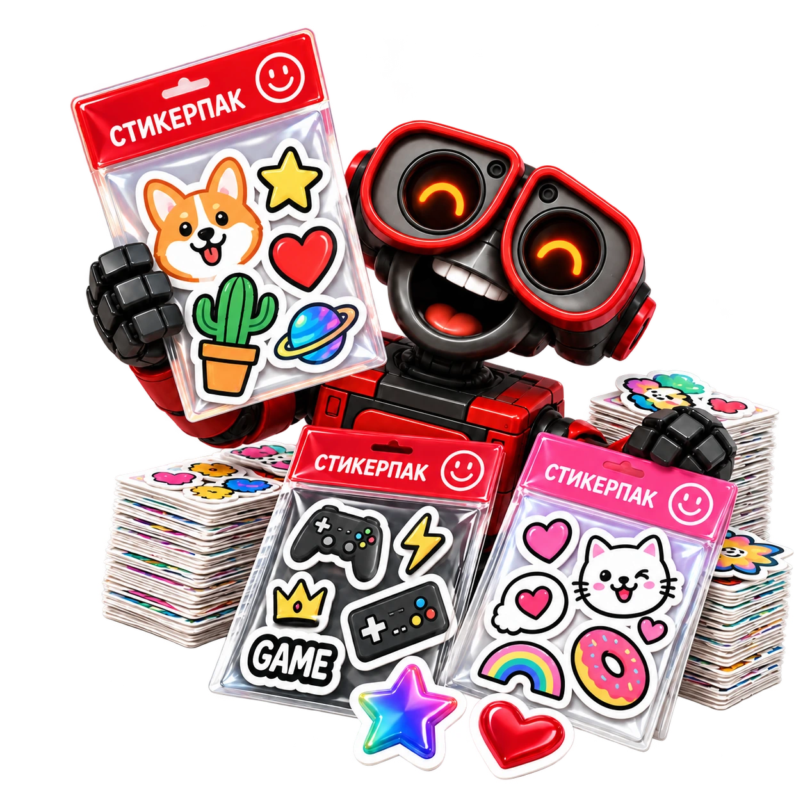

Готовый комплект
Удобно в наборе
Собираем стикерпаки для брендов, мастерских, школьных проектов и подарков. Несколько наклеек в одном наборе — удобно, красиво и готово к использованию.

Удобно в наборе
Под вашу задачу
Для бренда и подарков
Для любых тиражей
Настройте свой набор. Стоимость и срок появятся сразу.
Сначала собирается общий макет подложки и отдельных стикеров, затем выполняются печать и контурная резка элементов.
Материал, размер подложки и тираж наборов.
Тираж пака — число готовых подложек, а количество стикеров внутри указывается отдельно.
Самовывоз: Барнаул, пр. Строителей, 11. Доставка по России — по согласованию.
Для каждого элемента нужен отдельный контур резки. Важно оставить технологические расстояния между стикерами и безопасные поля по краям подложки.
Тираж пака — число готовых подложек, а количество стикеров внутри указывается отдельно. Для каждого изображения нужен свой контур резки. Между элементами и по краям оставляют технологические поля; площадь подложки нельзя целиком заполнить вплотную.
Для виниловой печати — белая плёнка. Для УФ-печати — белая, прозрачная или голографическая. В одном наборе могут быть элементы разных форм.
Для каждого элемента нужен отдельный контур резки. Важно оставить технологические расстояния между стикерами и безопасные поля по краям подложки.
Стоимость зависит от площади подложки, вида печати, материала и тиража готовых наборов. Минимальный чек — 600 ₽. Калькулятор показывает итог заказа и цену за набор.
До 10 000 ₽ — 1 рабочий день*. Для большей суммы срок = сумма заказа / 10 000 ₽ с округлением вверх. *После полного согласования макета. Доставку согласуем отдельно.

Тираж пака — число готовых подложек, а количество стикеров внутри указывается отдельно. Для каждого изображения нужен свой контур резки. Между элементами и по краям оставляют технологические поля; площадь подложки нельзя целиком заполнить вплотную.
Для каждого элемента нужен отдельный контур резки. Важно оставить технологические расстояния между стикерами и безопасные поля по краям подложки.
Сначала собирается общий макет подложки и отдельных стикеров, затем выполняются печать и контурная резка элементов.